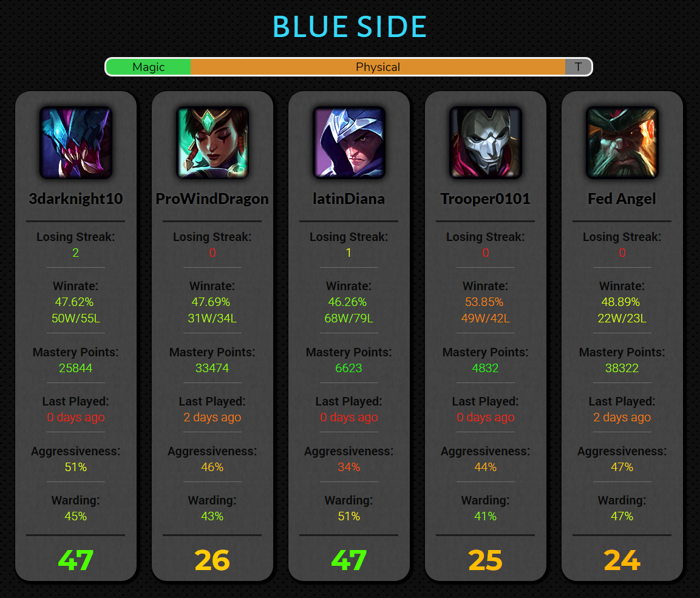
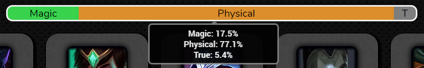
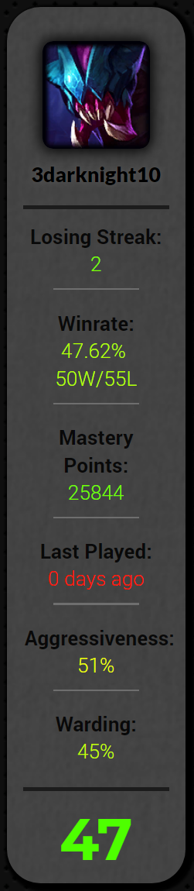

Welcome to Tiltseeker!
Tiltseeker is a website intended for jungle mains, and is best utilized in ranked. However, it can be beneficial for any player regardless of their role. By employing Riot's outstanding public API, Tiltseeker looks up all players in a given game and assigns them a "Tilt Score", which indicates how beneficial it would be to camp that target during the game.
In addition to assigning a "Tilt Score" for each player, Tiltseeker provides data about a team's damage output types, as well as various relevant stats for each individual player.

Tiltseeker's interface is fairly straightforward and most of the elements provide further detail when moused over. For example, on hovering over the damage bar as shown below, precise damage percentages are shown.

The Stats

Losing Streak: The losing streak is a measurement of how many games have been consecutively lost in a row. Specifically, the number of games that have been lost with no more than 3 hours in between match start times. The purpose is to determine whether the player is tilted due to a losing streak. Longer than a 3 hour break is significant enough that the tilt may have been reduced.
Winrate: The winrate is a percentage representing a player's average chance of winning a given game in ranked (when trying their hardest). If less than 30 ranked games have been played, Tiltseeker will display "Not Enough Games", as less than 30 games is too statistically weak of a signal to be relevant.
Mastery Points: The mastery points is the number of points a player has on the champion they are playing in the looked up game.
Last Played: The last played data point gives the number of days since the player last played as the champion they are currently using.
Aggressiveness: The aggressiveness is calculated by taking a player's historical games and for each game adding the kills + deaths + assists in that game. This is then compared to the average kills + deaths + assists on that champion. All the player's games are then tallied and a percentage is calculated which represents how aggressive they are compared to the average player, with the average aggressiveness being 50%.
Warding: The warding is calculated by analyzing a player's historical games, and adding the wards placed in each game. This is then compared to the average wards placed per game for that champion. All the player's games are then tallied and turned into a percentage which represents how much they ward compared to the average player, with the average player having a warding score of 50%.
Tilt Score: The tilt score is a cumulative estimate of the benefits of camping a player. A score below 25 means that a jungler's time is likely better spent somewhere else, because the player is likely good at warding, a one trick, a smurf, on a winning streak, familiar with their champion, and/or plays safe. A tiltscore from 25-35 is fairly neutral and does not indicate one way or the other. A camp score above 35 means that a jungler should heavily consider camping that player as they are likely bad at warding, unfamiliar with their champion, boosted, on a losing streak, and/or plays recklessly. A tiltscore above 50 is a prime candidate to camp and while a win is never guaranteed, a hard camp will make it incredibly likely.